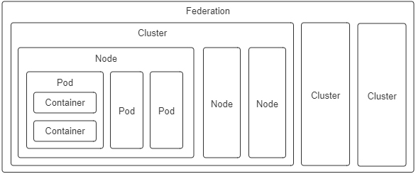

- 00 _导读 _ 什么是“The Fenix Project”？.md.html
- 00 开篇词 _ 如何构建一个可靠的分布式系统？.md.html
- 01 _ 原始分布式时代：Unix设计哲学下的服务探索.md.html
- 02 _ 单体系统时代：应用最广泛的架构风格.md.html
- 03 _ SOA时代：成功理论与失败实践.md.html
- 04 _ 微服务时代：SOA的革命者.md.html
- 05 _ 后微服务时代：跨越软件与硬件之间的界限.md.html
- 06 _ 无服务时代：“不分布式”云端系统的起点.md.html
- 07 _ 远程服务调用（上）：从本地方法到远程方法的桥梁.md.html
- 08 _ 远程服务调用（下）：如何选择适合自己的RPC框架？.md.html
- 09 _ RESTful服务（上）：从面向过程编程到面向资源编程.md.html
- 10 _ RESTful服务（下）：如何评价服务是否RESTful？.md.html
- 11 _ 本地事务如何实现原子性和持久性？.md.html
- 12 _ 本地事务如何实现隔离性？.md.html
- 13 _ 全局事务和共享事务是如何实现的？.md.html
- 14 _ 分布式事务之可靠消息队列.md.html
- 15 _ 分布式事务之TCC与SAGA.md.html
- 16 _ 域名解析系统，优化HTTP性能的第一步.md.html
- 17 _ 客户端缓存是如何帮助服务器分担流量的？.md.html
- 18 _ 传输链路，优化HTTP传输速度的小技巧.md.html
- 19 _ 如何利用内容分发网络来提高网络性能？.md.html
- 20 _ 常见的四层负载均衡的工作模式是怎样的？.md.html
- 21 _ 服务端缓存的三种属性.md.html
- 22 _ 分布式缓存如何与本地缓存配合，提高系统性能？.md.html
- 23 _ 认证：系统如何正确分辨操作用户的真实身份？.md.html
- 24 _ 授权（上）：系统如何确保授权的过程可靠？.md.html
- 25 _ 授权（下）：系统如何确保授权的结果可控？.md.html
- 26 _ 凭证：系统如何保证与用户之间的承诺是准确完整且不可抵赖的？.md.html
- 27 _ 保密：系统如何保证敏感数据无法被内外部人员窃取滥用？.md.html
- 28 _ 传输（上）：传输安全的基础，摘要、加密与签名.md.html
- 29 _ 传输（下）：数字证书与传输安全层.md.html
- 30 _ 验证：系统如何确保提交给服务的数据是安全的？.md.html
- 31 _ 分布式共识（上）：想用好分布式框架，先学会Paxos算法吧.md.html
- 32 _ 分布式共识（下）：Multi Paxos、Raft与Gossip，分布式领域的基石.md.html
- 33 _ 服务发现如何做到持续维护服务地址在动态运维中的时效性？.md.html
- 34 _ 路由凭什么作为微服务网关的基础职能？.md.html
- 35 _ 如何在客户端实现服务的负载均衡？.md.html
- 36 _ 面对程序故障，我们该做些什么？.md.html
- 37 _ 要实现某种容错策略，我们该怎么做？.md.html
- 38 _ 限流的目标与模式.md.html
- 39 _ 如何构建零信任网络安全？.md.html
- 40 _ 如何实现零信任网络下安全的服务访问？.md.html
- 41 _ 分布式架构中的可观测到底说的是什么？.md.html
- 42 _ 分析日志真的没那么简单.md.html
- 43 _ 一个完整的分布式追踪系统是什么样子的？.md.html
- 44 _ 聚合度量能给我们解决什么问题？.md.html
- 45 _ 模块导学：从微服务到云原生.md.html
- 46 _ 容器的崛起（上）：文件、访问、资源的隔离.md.html
- 47 _ 容器的崛起（下）：系统、应用、集群的封装.md.html
- 48 _ 以容器构建系统（上）：隔离与协作.md.html
- 49 _ 以容器构建系统（下）：韧性与弹性.md.html
- 50 _ 应用为中心的封装（上）：Kustomize与Helm.md.html
- 51 _ 应用为中心的封装（下）：Operator与OAM.md.html
- 52 _ Linux网络虚拟化（上）：信息是如何通过网络传输被另一个程序接收到的？.md.html
- 53 _ Linux网络虚拟化（下）：Docker所提供的容器通讯方案有哪些？.md.html
- 54 _ 容器网络与生态：与CNM竞争过后的CNI下的网络插件生态.md.html
- 55 _ 谈谈Kubernetes的存储设计理念.md.html
- 56 _ Kubernetes存储扩展架构：一个真实的存储系统如何接入或移除新存储设备？.md.html
- 57 _ Kubernetes存储生态系统：几种有代表性的CSI存储插件的实现.md.html
- 58 _ Kubernetes的资源模型与调度器设计.md.html
- 59 _ 透明通讯的涅槃（上）：通讯的成本.md.html
- 60 _ 透明通讯的涅槃（下）：控制平面与数据平面.md.html
- 61 _ 服务网格与生态：聊聊服务网格的两项标准规范.md.html
- 62 _ Fenix's Bookstore的前端工程.md.html
- 63 _ 基于Spring Boot的单体架构.md.html
- 64 _ 基于Spring Cloud的微服务架构.md.html
- 65 _ 基于Kubernetes的微服务架构.md.html
- 66 _ 基于Istio的服务网格架构.md.html
- 67 _ 基于云计算的无服务架构.md.html
- 春节特别放送（上）_ 有的放矢，事半功倍.md.html
- 春节特别放送（下）_ 积累沉淀，知行合一.md.html
- 用户故事 _ 詹应达：持续成长，不惧未来.md.html
- 结束语 _ 程序员之路.md.html
- 结课测试 _ 一套习题，测出你的掌握程度.md.html
- 捐赠
48 _ 以容器构建系统（上）：隔离与协作
你好，我是周志明。从这节课开始，我们讨论的焦点会从容器本身，过渡到容器编排上。
我们知道，自从Docker提出“以封装应用为中心”的容器发展理念，成功取代了“以封装系统为中心”的LXC以后，一个容器封装一个单进程应用，已经成为了被广泛认可的最佳实践。
然而当单体时代过去之后，分布式系统里对于应用的概念已经不再等同于进程了，此时的应用需要多个进程共同协作，通过集群的形式对外提供服务，那么以虚拟化方法实现这个目标的过程，就被称为容器编排（Container Orchestration）。
而到今天，Kubernetes已经成为了容器编排的代名词。不过在课程中，我并不打算过多介绍Kubernetes具体有哪些功能，也不会为你说明它由Pod、Node、Deployment、ReplicaSet等各种类型的资源组成可用的服务、集群管理平面与节点之间是如何工作的、每种资源该如何配置使用，等等，如果你想了解这方面信息，可以去查看Kubernetes官网的文档库或任何一本以Kubernetes为主题的使用手册。
在课程中，我真正希望能帮你搞清楚的问题是“为什么Kubernetes会设计成现在这个样子？”“为什么以容器构建系统应该这样做？”
而要寻找这些问题的答案，最好是从它们设计的实现意图出发。所以在接下来的两节课中，我虚构了一系列从简单到复杂的场景，带你来理解并解决这些场景中的问题。
这里我还想说明一点，学习这两节课的内容并不要求你对Kubernetes有过多深入的了解，但需要你至少使用过Kubernetes和Docker，基本了解它的核心功能与命令；另外，课程中还会涉及到一点儿Linux系统内核资源隔离的基础知识，别担心，只要你仔细学习了“容器的崛起”这个小章节，就已经完全够用了。
构建容器编排系统时都会遇到什么问题？
好，现在我们来设想一下，如果让你来设计一套容器编排系统，协调各种容器来共同来完成一项工作，你可能会遇到什么问题？会如何着手解决呢？
我们先从最简单的场景开始吧：
场景一：假设你现在有两个应用，其中一个是Nginx，另一个是为该Nginx收集日志的Filebeat，你希望将它们封装为容器镜像，以方便日后分发。
最直接的方案就将Nginx和Filebeat直接编译成同一个容器镜像，这是可以做到的，而且并不复杂。不过这样做其实会埋下很大的隐患：它违背了Docker提倡的单个容器封装单进程应用的最佳实践。
Docker设计的Dockerfile只允许有一个ENTRYPOINT，这并不是什么随便添加的人为限制，而是因为Docker只能通过监视PID为1的进程（即由ENTRYPOINT启动的进程）的运行状态，来判断容器的工作状态是否正常，像是容器退出执行清理、容器崩溃自动重启等操作，Docker都必须先判断状态。
那么我们可以设想一下，即使我们使用了supervisord之类的进程控制器，来解决同时启动Nginx和Filebeat进程的问题，如果因为某种原因它们不停发生崩溃、重启，那Docker也无法察觉到，它只能观察到supervisord的运行状态。所以，场景一关于封装为容器镜像的需求会理所当然地演化成场景二。
场景二：假设你现在有两个Docker镜像，其中一个封装了HTTP服务，为便于称呼，叫它Nginx容器，另一个封装了日志收集服务，叫它Filebeat容器。现在你要求Filebeat容器能收集Nginx容器产生的日志信息。
其实，场景二的需求依然不难解决，只要在Nginx容器和Filebeat容器启动时，分别把它们的日志目录和收集目录挂载为宿主机同一个磁盘位置的Volume即可，在Docker中，这种操作是十分常用的容器间信息交换手段。
不过，容器间信息交换不仅仅是文件系统。
假如此时我又引入了一个新的工具confd，它是Linux下的一种配置管理工具，作用是根据配置中心（Etcd、ZooKeeper、Consul）的变化，自动更新Nginx的配置。那么这样的话，就又会遇到新的问题。
这是因为，confd需要向Nginx发送HUP信号，才便于通知Nginx配置已经发生了变更，而发送HUP信号自然就要求confd与Nginx能够进行IPC通信才行。
当然，尽管共享IPC名称空间不如共享Volume常见，但Docker同样支持了这个功能，也就是通过docker run命令提供了–ipc参数，用来把多个容器挂载到同一个父容器的IPC名称空间之下，以实现容器间共享IPC名称空间的需求。类似地，如果要共享UTS名称空间，可以使用–uts参数；要共享网络名称空间的话，就使用–net参数。
这就是Docker针对场景二这种不跨机器的多容器协作，所给出的解决方案了。
实际上，自动地为多个容器设置好共享名称空间，就是Docker Compose提供的核心能力。
不过，这种针对具体应用需求来共享名称空间的方案，确实可以工作，但并不够优雅，也谈不上有什么扩展性。要知道，容器的本质是对cgroups和namespaces所提供的隔离能力的一种封装，在Docker提倡的单进程封装的理念影响下，容器蕴含的隔离性也多了仅针对于单个进程的额外局限。
然而Linux的cgroups和namespaces，原本都是针对进程组而不只是单个进程来设计的，同一个进程组中的多个进程，天然就可以共享相同的访问权限与资源配额。
所以，如果现在我们把容器与进程在概念上对应起来，那容器编排的第一个扩展点，就是要找到容器领域中与“进程组”相对应的概念，这是实现容器从隔离到协作的第一步。在Kubernetes的设计里，这个对应物叫做Pod。
额外知识：Pod名字的由来与含义- 在容器正式出现之前的Borg系统中，Pod的概念就已经存在了，从Google的发表的《Large-Scale Cluster Management at Google with Borg》里可以看出，Kubernetes时代的Pod整合了Borg时代的“Prod”（Production Task的缩写）与“Non-Prod”的职能。由于Pod一直没有权威的中文翻译，我在后面课程中会尽量用英文指代，偶尔需要中文的场合就使用Borg中Prod的译法，即“生产任务”来指代。
这样，有了“容器组”的概念，只需要把多个容器放到同一个Pod中，场景二的问题就可以解决了。
Pod的含义与职责
事实上，扮演容器组的角色，满足容器共享名称空间的需求，是Pod两大最基本的职责之一，同处于一个Pod内的多个容器，相互之间会以超亲密的方式协作。请注意，“超亲密”在这里的用法不是什么某种带强烈感情色彩的形容词，而是代表了一种有具体定义的协作程度。
具体是什么意思呢？
对于普通非亲密的容器来说，它们一般以网络交互方式（其他的如共享分布式存储来交换信息，也算跨网络）协作；对于亲密协作的容器来说，是指它们被调度到同一个集群节点上，可以通过共享本地磁盘等方式协作；而超亲密的协作，是特指多个容器位于同一个Pod这种特殊关系，它们将默认共享以下名称空间：
- UTS名称空间：所有容器都有相同的主机名和域名。
- 网络名称空间：所有容器都共享一样的网卡、网络栈、IP地址，等等。因此，同一个Pod中不同容器占用的端口不能冲突。
- IPC名称空间：所有容器都可以通过信号量或者POSIX共享内存等方式通信。
- 时间名称空间：所有容器都共享相同的系统时间。
也就是说，同一个Pod的容器，只有PID名称空间和文件名称空间默认是隔离的。
PID的隔离让开发者的每个容器都有独立的进程ID编号，它们封装的应用进程就是PID为1的进程，开发人员可以通过Pod元数据定义中的spec.shareProcessNamespace，来改变这点。而一旦要求共享PID名称空间，容器封装的应用进程就不再具有PID为1的特征了，这就有可能导致部分依赖该特征的应用出现异常。
而在文件名称空间方面，容器要求文件名称空间的隔离是很理所应当的需求，因为容器需要相互独立的文件系统以避免冲突。但容器间可以共享存储卷，这是通过Kubernetes的Volume来实现的。
额外知识：Kubernetes中Pod名称空间共享的实现细节-
Pod内部多个容器共享UTS、IPC、网络等名称空间，是通过一个名为Infra Container的容器来实现的，这个容器是整个Pod中第一个启动的容器，只有几百KB大小（代码只有很短的几十行，见这里），Pod中的其他容器都会以Infra Container作为父容器，UTS、IPC、网络等名称空间，实质上都是来自Infra Container容器。-
如果容器设置为共享PID名称空间的话，Infra Container中的进程将作为PID 1进程，其他容器的进程将以它的子进程的方式存在，此时就会由Infra Container来负责进程管理（比如清理僵尸进程）、感知状态和传递状态。-
由于Infra Container的代码除了注册SIGINT、SIGTERM、SIGCHLD等信号的处理器外，就只是一个以pause()方法为循环体的无限循环，永远处于Pause状态，所以它也常被称为“Pause Container”。
好，除此之外，Pod的另一个基本职责是实现原子性调度。这里我们可以先明确一点，就是如果容器编排不跨越集群节点，那是否具有原子性其实都不影响大局。
但是在集群环境中，容器可能会跨机器调度时，这个特性就变得非常重要了。
如果以容器为单位来调度的话，不同容器就有可能被分配到不同机器上。而两台机器之间本来就是物理隔离，依靠网络连接的，所以这时候谈什么名称空间共享、cgroups配额共享都没有意义了，由此我们就从场景二又演化出了场景三。
场景三：假设你现在有Filebeat、Nginx两个Docker镜像，在一个具有多个节点的集群环境下，要求每次调度都必须让Filebeat和Nginx容器运行于同一个节点上。
其实，两个关联的协作任务必须一起调度的需求，在容器出现之前很久就有了。
我举个简单的例子。在传统的多线程（或多进程）并发调度中，如果两个线程（或进程）的工作是强依赖的，单独给谁分配处理时间而让另一个被挂起，都会导致某一个线程无法工作，所以也就有了协同调度（Coscheduling）的概念，它主要用来保证一组紧密联系的任务能够被同时分配资源。
这样来看的话，如果我们在容器编排中，仍然坚持把容器看作是调度的最小粒度，那针对容器运行所需资源的需求声明，就只能设定在容器上。如此一来，集群每个节点的剩余资源越紧张，单个节点无法容纳全部协同容器的概率就越大，协同的容器被分配到不同节点的可能性就越高。
说实话，协同调度是很麻烦的，实现起来要么很低效，比如Apache Mesos的Resource Hoarding调度策略，就要等所有需要调度的任务都完备后，才会开始分配资源；要么就是很复杂，比如Google就曾针对Borg的下一代Omega系统，发表过论文《Omega: Flexible, Scalable Schedulers for Large Compute Clusters》，其中介绍了它是如何通过乐观并发（Optimistic Concurrency）、冲突回滚的方式，做到高效率且高度复杂的协同调度。
而如果我们将运行资源的需求声明定义在Pod上，直接以Pod为最小的原子单位来实现调度的话，由于多个Pod之间一定不存在超亲密的协同关系，只会通过网络非亲密地协作，那就根本没有协同的说法，自然也不需要考虑复杂的调度了（关于Kubernetes的具体调度实现，我会在“资源与调度”这个小章节中展开讲解）。
Pod是隔离与调度的基本单位，也是我们接触的第一种Kubernetes资源。Kubernetes把一切都看作是资源，不同资源之间依靠层级关系相互组合协作，这个思想是贯穿Kubernetes整个系统的两大核心设计理念之一，不仅在容器、Pod、主机、集群等计算资源上是这样，在工作负载、持久存储、网络策略、身份权限等其他领域中，也都有着一致的体现。

另外我想说的是，因为Pod是Kubernetes中最重要的资源，又是资源模型中一种仅在逻辑上存在、没有物理对应的概念（因为对应的“进程组”也只是个逻辑概念），也是其他编排系统没有的概念，所以我这节课专门给你介绍了下它的设计意图，而不是像帮助手册那样直接给出它的作用和特性。
对于Kubernetes中的其他计算资源，像Node、Cluster等都有切实的物理对应物，很容易就能形成共同的认知，我就不一一介绍了，这里你只需要了解下它们的设计意图就行：
- 容器（Container）：延续了自Docker以来一个容器封装一个应用进程的理念，是镜像管理的最小单位。
- 生产任务（Pod）：补充了容器化后缺失的与进程组对应的“容器组”的概念，Pod中的容器共享UTS、IPC、网络等名称空间，是资源调度的最小单位。
- 节点（Node）：对应于集群中的单台机器，这里的机器既可以是生产环境中的物理机，也可以是云计算环境中的虚拟节点，节点是处理器和内存等资源的资源池，是硬件单元的最小单位。
- 集群（Cluster）：对应于整个集群，Kubernetes提倡的理念是面向集群来管理应用。当你要部署应用的时候，只需要通过声明式API将你的意图写成一份元数据（Manifests），把它提交给集群即可，而无需关心它具体分配到哪个节点（尽管通过标签选择器完全可以控制它分配到哪个节点，但一般不需要这样做）、如何实现Pod间通信、如何保证韧性与弹性，等等，所以集群是处理元数据的最小单位。
- 集群联邦（Federation）：对应于多个集群，通过联邦可以统一管理多个Kubernetes集群，联邦的一种常见应用是支持跨可用区域多活、跨地域容灾的需求。
小结
学完了这节课，我们要知道，容器之间顺畅地交互通信是协作的核心需求，但容器协作并不只是通过高速网络来互相连接容器而已。如何调度容器，如何分配资源，如何扩缩规模，如何最大限度地接管系统中的非功能特性，让业务系统尽可能地免受分布式复杂性的困扰，都是容器编排框架必须考虑的问题，只有恰当解决了这一系列问题，云原生应用才有可能获得比传统应用更高的生产力。
一课一思
现在，我们能够明确隔离与协作的含义，也就是容器要让它管理的进程相互隔离，使用独立的资源与配额；容器编排系统要让它管理的各个容器相互协作，共同维持一个分布式系统的运作。但除了协作之外，你认为容器编排系统是否还有其他必须考虑的需求目标呢？
欢迎在留言区分享你的见解。如果你觉得有收获，也欢迎把今天的内容分享给更多的朋友。感谢你的阅读，我们下一讲再见。
© 2019 - 2023 Liangliang Lee. Powered by gin and hexo-theme-book.